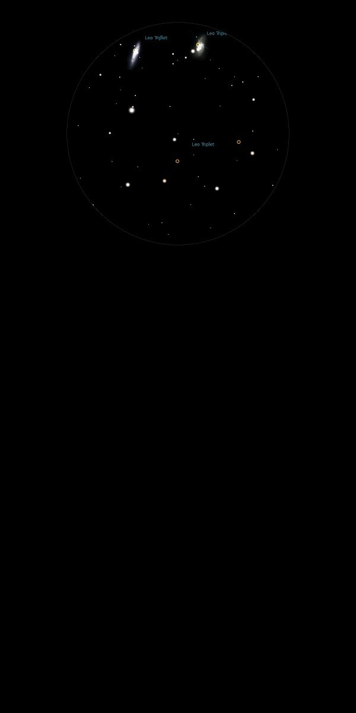

NGC 3628
Spiral Galaxy in Leo
NGC 3389
Mag 10.9
Forms Leo Triplet with M65 and M66
06/04/13
15/04/13
1st quarter moon bright enough to cast shadows
22/04/14
Part of the Leo Triplet along with M65 and M66
Just the merest hint of a smudge in a hazy sky
Much fainter than M65 or M66 which is perhaps why Messier missed
it
20/04/15
Much fainter than it's companions M65 and M66 which together
form the Leo Triplet
A hint of shape with inverted vision of this edge on Galaxy
All three of the Leo Triplet just fit into the FOV in 12mm
31/03/16
Observed with M66 and NGC 3628, together forming the Leo Triplet
Rather a sparse FOV, with the only bright star HIP 55262, Mag
7.10, between M65 and NGC 3628
All three galaxies show good shapes and structures, with NGC
3628, although the faintest at Mag 9.50 appearing the largest
with the merest hint of a dust lane splitting it lenghways
M66 has a nice little asterism of stars of Mag 9.8 and 11th Mag
sitting beside it
21/03/17
Observed with M65 and M66, which is ANs object of the month for
March
NGC 3628 is much fainter than the other two members of the LEO
Triplet, but with inverted vision appears much larger although
still an elongated blur